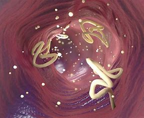

Los parásitos son organismos que viven a expensas de otro organismo, llamado huésped, del cual obtienen alimento y refugio. Pueden causar daño al huésped o incluso enfermedades. Existen diferentes tipos de parásitos según su tamaño, ciclo de vida y ubicación en el huésped.
-Por contacto con agua o alimentos contaminados.
-Por la picadura de un insecto.
-Por contacto sexual.
-Al entrar en la piel, especialmente si se camina descalzo sobrfe superficies contaminadas.
Es la disciplina que estudia el parasitismo producido por protozoarios, helminos y artrópodos. Aquí es importante conocer lo siguiente:
-Parasitismo: Es la relación entre dos organismos, donde uno se denomina huésped y el otro parásito.
-Parásito: Es aquel organismo que vive a expensas de otro.
-Parásito obligado: Es un microorganismo que siempre tendrá una vida parasitaria.
-Parásito facultativo: Tiene una vida de parásito, pero también es capaz de tener una vida libre.
-Huésped definitivo: Aquel que hospeda al parásito en su forma adulta o madura.
-Huésped intermediario: Es aquel que alberga al parásito en las formas larvarias o asexuales.
Las enfermedades parasitarias se presentan en todas las edades, pero es más frecuente en edades pediátricas, lo cual se relaciona con el juego y la forma de vivir; sin embargo, también está muy asociado a estratos socioeconómicos bajos.

| Criterio | Categorías | Ejemplo |
|---|---|---|
| Tamaño | Macroparásitos (visibles a simple vista) | Ascaris lumbricoides (lombriz intestinal) |
| Microparásitos (microscópicos) | Plasmodium falciparum (malaria) | |
| Ubicación en el huésped | Ectoparásitos (viven en la superficie) | Pediculus humanus (piojo) |
| Endoparásitos (viven dentro del cuerpo) | Giardia lamblia (protozoo intestinal) | |
| Dependencia del huésped | Obligados (siempre dependen de un huésped) | Trypanosoma cruzi (Chagas) |
| Facultativos (pueden vivir de forma libre o parasitaria) | Naegleria fowleri (ameba de vida libre) | |
| Número de huéspedes en el ciclo de vida | Monoxenos (un solo huésped) | Enterobius vermicularis (oxiuro) |
| Heteroxenos (requieren más de un huésped) | Taenia solium (tenia del cerdo) | |
| Tipo de parásito | Protozoarios (unicelulares) | Leishmania spp. (leishmaniasis) |
| Helmintos (gusanos) | Schistosoma mansoni (esquistosomiasis) | |
| Artrópodos (insectos y ácaros parásitos) | Sarcoptes scabiei (sarna) |
Si gustas puedes visitar el siguiente video para saber mas sobre los tipos de virus: